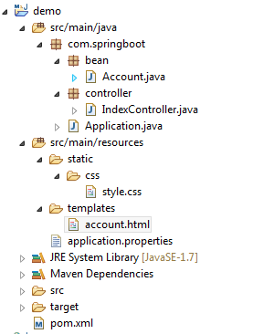
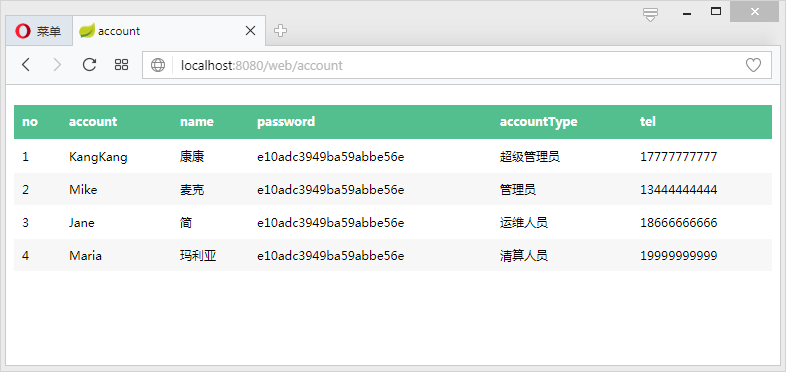

Spring Boot支持FreeMarker、Groovy、Thymeleaf和Mustache四种模板解析引擎，官方推荐使用Thymeleaf。
spring-boot-starter-thymeleaf
在Spring Boot中使用Thymeleaf只需在pom中加入Thymeleaf的starter即可：
|
|
在Spring Boot 1.5.9.RELEASE版本中，默认的Thymeleaf版本为2.1.6.RELEASE版本，这里推荐使用3.0以上版本。在pom中将Thymeleaf的版本修改为3.0.2.RELEASE：
|
|
在Spring Boot中，默认的html页面地址为src/main/resources/templates，默认的静态资源地址为src/main/resources/static。
Thymeleaf默认配置
在Spring Boot配置文件中可对Thymeleaf的默认配置进行修改：
|
|
一般开发中将spring.thymeleaf.cache设置为false，其他保持默认值即可。
简单示例
编写一个简单的Controller：
|
|
编写account.html页面：
|
|
最终项目目录如下所示：

启动项目，访问http://localhost:8080/web/account：
